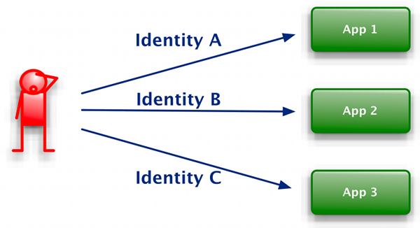
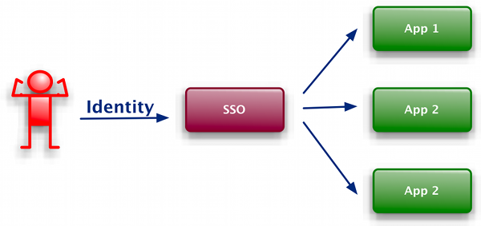
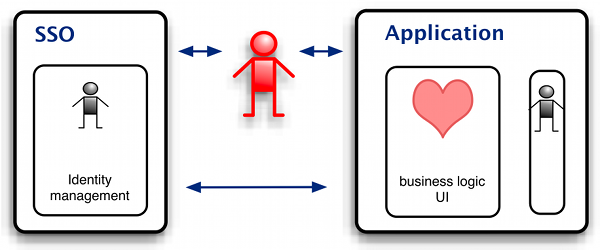

Single Sign On (SSO) is quite old idea. In last few years become quite popular. Nearly all big IT companies like google, facebook, IBM, ORACLE bring their own SSO solution. Many of them support OpenID but all of them. Also web site authors feels that ability accept identities form different sources have benefits. For example e-shop can have better user experience if is available with Google identities.
Lets look why idea of SSO is so popular from end user and application provider point of view.
User have to interact with many different systems. All particular systems have their own login page, registration form and other. User have to remember logins and password for each system. User also have to be able to treat with different implementations same use cases like login, change login, forgotten login and others.
When SSO is introduced into systems user experience could be much better. User don't have to remember many different logins and passwords. Other user cases like login, change password and others looks same and behaves in a same way.
SSO implies changes from application architecture perspectives. When SSO is not used following use cases have to be implemented on each application:
When SSO is integrated into application than part of user management is done on identity provider. Also previously listed use cases could be saved on integrated application. Identity providers usually provides other information like user's email, name and so on. List of provided attributes could vary between providers. Application that support SSO can't relay on this additional attributes.
